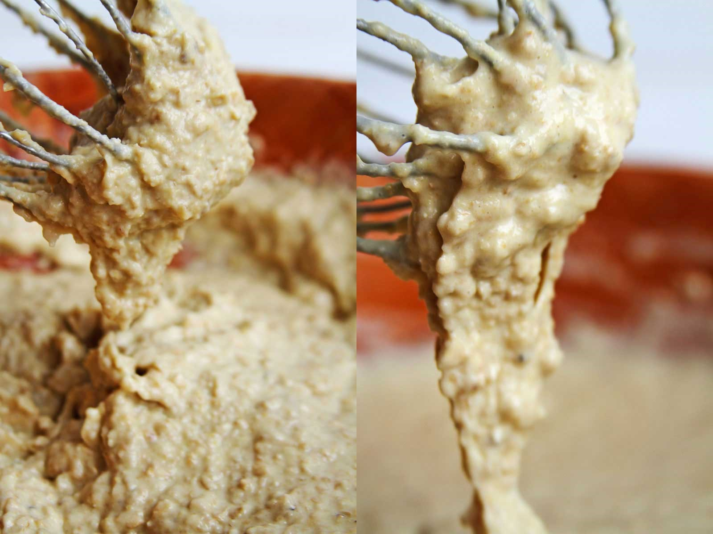

INGREDIENTES SECOS
3/4 xícara aveia em flocos finos (85 gramas)
3/4 xícara araruta (90 gramas) (substitua por amido de milho, polvilho
doce, polvilho azedo ou fécula de batata)
1 colher de sopa de farinha de linhaça (13 gramas – opcional)
1 colher de sopa de açúcar mascavo (10 gramas)
1 colher de sopa de fermento biológico seco instantâneo (12 gramas)
1/2 colher de chá de sal (2,5 gramas)
1 colher de chá de goma xantana
INGREDIENTES MOLHADOS
3 ovos (150 gramas)
1/2 xícara de água ou use leite vegetal (120 ml)
1/3 xícara de azeite ou óleo de coco (80 ml)
1 xícara de grão-de-bico cozido al dente (150 gramas)
Em uma bacia grande coloque todos os ingredientes secos e misture com um fuet (batedor de arame) ou colher de pau e reserve.
Bata no liquidificador os ovos, a água, o óleo e o grão-de-bico cozido.
Misture a massa de grão-de-bico com os ingredientes secos até obter uma massa homogênea.
Coloque a massa em uma forma de pão untada e enfarinhada, eu estou usando uma forma média de silicone que mede 22 cm de comprimento, 6 cm de altura e 8 cm de largura.
Textura com goma xantana (esquerda) e sem a goma (direita)

Deixe a massa descansando em um local quentinho da cozinha.
Tenha um pouco de paciência, a massa deve dobrar de volume, e isso demora em média 1 hora. Quando estiver nos últimos 15 minutos de crescimento preaqueça o forno a 180º C.
Quando o forno já tiver aquecido e o pão crescido coloque a forma dentro do forno e asse por aproximadamente 30 minutos.
Deixe amornar para retirar o pão da forma e é sempre bom deixar o pão sobre uma grade para esfriar de maneira mais uniforme.
Espere o pão esfriar por completo para depois cortar. Sirva com seu acompanhamento preferido.
- Opte pela aveia sem glúten caso seja intolerante ou troque por quinoa em flocos, como a quinoa absorve um pouco mais de água use aproximadamente 3 colheres de sopa extra de água para ajustar a textura.
- Substitua a araruta por polvilho doce.
- Substitua o açúcar mascavo por qualquer outro açúcar mas não pode ser adoçante.
- Você pode substituir o óleo por qualquer gordura ou azeite.
- O ovos não são substituíveis nesta receita.
- O grão-de-bico não pode ser nem muito mole, nem muito duro, se estiver mole demais você vai precisar usar 1 ou 2 colheres de sopa de farinha de arroz para enxugar a umidade que está em excesso.
-Não pode ser farinha de grão-de-bico, apesar de ser o mesmo ingrediente muda completamente a estrutura da massa.
- Se você estiver usando uma forma grande de pão, dobre a receita.
- Eu gosto de deixar o pão crescendo dentro do micro-ondas desligado junto com uma xícara de água quente, desta maneira cria uma estufa e o pão cresce mais rápido.
https://youtu.be/kuzk1UZE4nE
Variação: https://amorpelacomida.com.br/pao-fit/
Fat: 13%
Calories: 162 calories
Saturated Fat: 1,3 g
Unsaturated Fat: 0%
Sodium: 6%
Fiber: 12%
Cholesterol: 16%
Carbohydrate: 6%
Sugar: 1,4 g
Serving Size: 12
Trans Fat: 0%
Protein: 10%